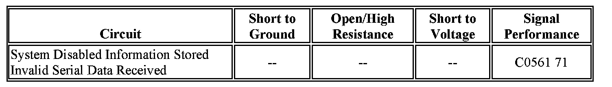

C0561
DTC C0561
Diagnostic Instructions
- Perform the Diagnostic System Check - Vehicle prior to using this diagnostic procedure.
- Review Strategy Based Diagnosis for an overview of the diagnostic approach.
- Diagnostic Procedure Instructions provides an overview of each diagnostic category.
DTC Descriptor
DTC C0561 71: System Disabled Information Stored Invalid Serial Data Received.
Diagnostic Fault Information

Circuit/System Description
The electronic brake control module (EBCM) receives messages from other modules over GMLAN which are needed to perform antilock brake system (ABS), vehicle stability enhancement system (VSES), or traction control system (TCS) functions.
Conditions for Running the DTC
- The ignition switch is in the ON position.
- Ignition voltage is greater than 9.5 volts.
Conditions for Setting the DTC
The power-train control module (PCM) or body control module (BCM) diagnosis a condition prevention the engine control portion of the traction control function and sends a GMLAN message to the EBCM indicating that torque reduction is not allowed. The PCM or BCM will typically set a DTC and the EBCM will set this DTC.
Action Taken When the DTC Sets
One or more of the following actions may occur:
- The EBCM disables the traction control system (TCS) until the DTC becomes a history DTC.
- The traction Off Indicator turns ON.
- The Antilock Brake System (ABS) remains functional.
Conditions for Clearing the DTC
- The condition for the DTC is no longer present.
- The EBCM automatically clears the history DTC when a current DTC is not detected in 100 consecutive drive cycles.
Circuit/System Verification
1. Perform Diagnostic System Check - Vehicle.
-> Diagnose any other Vehicle DTCs before attempting diagnosis of C0561.
2. With Tech 2, view Invalid Signal, Data Display list under EBCM.
Important: all EBCMs support a Invalid Signal Data Display. If this function is not listed under Tech 2 Data Display then proceed to step 4.
3. Refer to appropriate module for diagnosing any invalid signal.
4. If no invalid signal are present, view Signal Fault data in Enhanced DTC Data.
5. Refer to appropriate module for diagnosing that invalid message data.
6. Do not replace the EBCM due to this DTC fault.